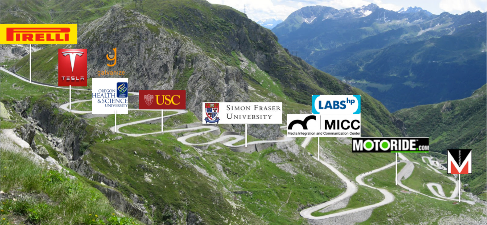
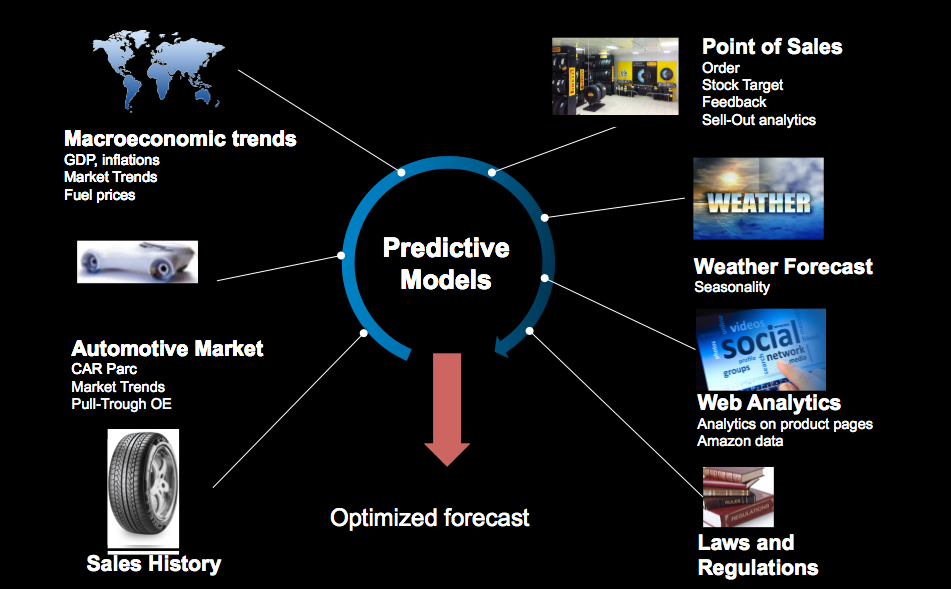

Building a data-driven culture at Pirelli
Data Science Milan Meetup
Nov 28th 2016
Created by @carlotorniai
Outline
- A little bit about me
- Data Science and Anlytics in Pirelli
- Team
- Projects
- Challenges
Education
Telecommunication Engineering – University of Florence (UNIFI)
Master in Internet Engineering – UNIFI
PhD in Informatics and Multimedia – Prof. Alberto del Bimbo (UNIFI), Steve Cayzer (HP Labs)
Past experiences

Data Science and Analytics at Pirelli
The team
DSAA current structure
- A start up inside Pirelli
- Reporting directly to the CTO
- Flat structure
- Agile approach
Data Science and Anayltics Mission
Create a data-driven culture across the company by fostering systems of insights that can lead the development of advanced analytics solutions on top of integrated, centralized and democratized data sources with the goal to create value by moving from reactive to proactive decision making
Data Science and Advanced Analytics Mission
Create a data-driven culture across the company ...
Data-driven culture
- Is more than define and look at KPIs
- Be empowered to interact with data
- Understand how to ask questions to data
- Learn how to let data rise questions
- Is more than “a new tool”
- Data is not where the arguing ends but where it begins
Clusters od Activities
Extended Value Chain – Demand Forecast
Smart Manufacturing
CyberTyre and CyberFleet
Demand Forecast

Demand Forecast: Data Product
Smart Manufacturing Vision
Smart Manufacturing: Infrastructure
CyberTyre and Cyber Fleet

Challenges
Have clear goals
Build the team
Hire somebody that has been there before
Blend internal and external resources
Don't rely too much on classic recruiting approach
Cultural and Organizational changes
- Where your Data Science team should be placed?
- It’s not just a set of new tools
- Democratization of Data may impact power balances
- Breaking siloes can be painful
Manage Expectations
- There are problems that cant’ be solved with Data
- Data Science isn't magic
- Identify areas of activities according to impact (short and long term)
- Need to have the top management buy in ... but need to start bottom-up
Opportunities
- Building team
- New workign approach
- Cultural and organizational changes
- Build a data driven culture
- Manage expectations
- Use data to assess impact and effectiveness
- Gain competitive advantage